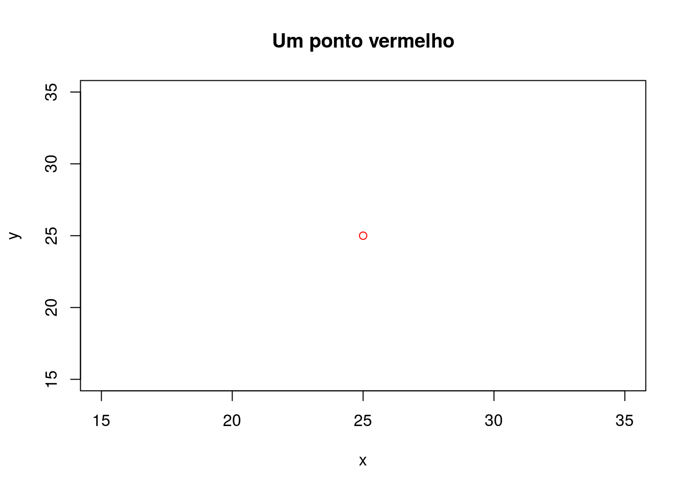

Capítulo 3 Infraestrutura
3.1 Hardware
3.2 Software
3.2.1 R
O , daqui em diante simbolizado ‘R’, é uma linguagem de programação e um ambiente de análises estatísticas e gráficas. Sua origem data de 1995, quando dois pesquisadores (Robert Gentleman e Ross Ihaka) iniciaram o projeto de seu desenvolvimento no Departamento de Estatística da Universidade de Auckland na Nova Zelândia. O nome deriva, exatamente, das iniciais dos dois pesquisadores: R.
Atualmente o R está disponível como um Software Livre sob os termos da Licença Pública Geral do GNU da Fundação do Software Livre na forma de código fonte. Isso quer dizer que o R está disponível gratuitamente para qualquer interessado em utilizá-lo, seja para atividades com ou sem fins lucrativos. Além disso, essa licença permite que o usuário faça alterações conforme desejado. Tanto o aplicativo como as alterações podem ser reproduzidas e distribuídas, desde que sempre mantidos os direitos dos autores.
Enfim, a grande vantagem do R em relação à maioria dos softwares de análise estatística disponíveis no mercado é exatamente a sua gratuidade. Mas essa gratuidade não é, como em alguns casos, sinônimo de baixa qualidade. Pelo contrário, o R possui uma série de funcionalidades muitas vezes ainda não implementadas em softwares comercializados. Todo tipo de análise pode ser realizada utilizando o R: basta que já exista um pacote que a implemente ou que o usuário desenvolva o código. Além disso, o R permite que as rotinas de análise sejam registradas e, quando necessário, verificadas ou disponibilizadas para verificação por outros pesquisadores. Trata-se de uma funcionalidade que possibilita verdadeiramente a observação de alguns dos princípios do método científico.
A gratuidade do R por si só já deveria ser suficiente para convencer nossos pesquisadores, que dispõe de recursos escassos para manter as licenças dos softwares comerciais, a usar o R. Mas não é só isso! O R é hoje o que a maioria dos estatísticos e matemáticos ao redor do mundo utiliza para analisar seus dados. São esses estatísticos e matemáticos que estão ajudando a desenvolver o R mais e mais. Além disso, são esses profissionais que disponibilizam parte de seu tempo para elaborar a miríade de tutoriais e materiais de apoio disponíveis atualmente. Nenhum software comercial possui, hoje, seja em meio digital como em meio impresso, um volume de material de apoio maior do que o R. Soma-se ainda o fato de que o R permite a confecção de gráficos de qualidade igual ou até superior a qualquer pacote comercial disponível hoje no mercado. Além disso, o R roda em qualquer sistema operacional. Será que é preciso dizer mais alguma coisa?
Conhecendo melhor o R
A melhor maneira de conhecer melhor o R é, sem dúvida, instalando-o em seu computador. Para isso precisamos, primeiro, visitar a página do projeto na Internet:
Uma grande quantidade de informação, muito além do que se busca incluir neste livro, pode ser encontrada no sítio do projeto. Ali estão disponíveis diversos manuais de uso (Documentation > Munuals), bem como livros (Documentation > Books) e artigos publicados na revista do projeto (Documentation > The R Journal). Ainda ha uma página com respostas às perguntas mais frequentes (Documentation > FAQs) e uma página inteira explicando sobre como é possível conseguir ajuda do próprio R antes de recorrer a terceiros (Help With R > Getting Help) – como a documentação do R é extensa e a maioria dos colaboradores do projeto não são pagos pela colaboração, recomendo que você sempre procure, primeiro, resolver qualquer dúvida sozinho.
O procedimento de instalação do R depende do sistema operacional (OS, do inglês operating system) de seu computador:
- Linux: https://cloud.r-project.org/bin/linux/
- (Mac) OS X: https://cloud.r-project.org/bin/macosx/
- Windows: https://cloud.r-project.org/bin/windows/base/
A página referente à cada OS possui as instruções necessárias para descarregar e instalar o R em seu computador. Em geral, o processo de instalação é exatamente igual àquele de outros softwares que você usa em seu dia-a-dia.
Depois de instalar o R, agora é a hora de escolher uma interface gráfica do usuário (GUI, do inglês graphical user interface) que facilite nossa interação com o R. Isso porque o R possui apenas uma interface de linha de comando (CLI, do inglês command-line interface), ou seja, a única forma de interação com o R se dá via emissão de comandos sob a forma de sucessivas linhas de texto, as chamadas linhas de comando. Dentre as diversas opções gratuitamente disponíveis, as mais atrativas são aquelas que incluem ferramentas adicionais de apoio à programação em R e facilitem a análise, visualização e gerenciamento dos dados. Tais ferramentas constituem os chamados ambientes de desenvolvimento integrado (IDE, do inglês integrated development environment). Atualmente, a GUI e IDE mais popular é o RStudio, cujo instalador pode ser descarregado de https://www.rstudio.com/products/rstudio/download/.
Assim como para o R, o procedimento de instalação do RStudio depende do seu OS. Depois de instalado, inicie o RStudio em seu computador. Ele deve se parecer mais ou menos como na figura a seguir:

RStudio – interface gráfica do usuário e ambiente de desenvolvimento integrado para R (em sua versão para Linux). Uma extensa lista de alternativas está disponível na Wikipedia.
Você deve ter notado que o RStudio é composto por quatro grandes painéis retangulares, cada um contendo conteúdo específico. Grosso modo, o painel superior direito mostra informações diversas sobre a atual sessão de trabalho, sendo geralmente pouco utilizado. Já o painel inferior direito serve à visualização de gráficos e páginas de ajuda do R, o que o faz ser bastante utilizado. O painel superior esquerdo é aquele utilizado para a programação em R, ou seja, aquele onde o código fonte utilizado para a análise dos dados é editado. Esse painel é aquele onde creio que ocupamos a maior parte do tempo. Por fim, o painel inferior esquerdo corresponde à interface de linha de comando, CLI, do R. É ali que o código fonte editado no painel superior esquerdo deve ser emitido para que a mágica aconteça.
Primeiros passos
Façamos algumas operações matemáticas para nos familiarizarmos com o R. Você pode copiar e colar as linhas de código abaixo no CLI do R, que de agora em diante chamaremos console.
# As quatro operações matemáticas básicas:
2 + 3 # soma## [1] 55* 5 # multiplicação## [1] 2525/5 # divisão ## [1] 55 -3 # subtração## [1] 2# Três operações matemáticas úteis:
2^2 # Potenciação (ou exponenciação)## [1] 4log(4) # Função logarítmica## [1] 1.386294sqrt(25) # Raiz quadrada## [1] 5Você deve ter notado que que os símbolos utilizados são os mesmos encontrados em qualquer calculadora científica. São também os mesmos utilizados nas operações matemáticas de qualquer planilha eletrônica de edição de dados. Isso significa que podemos deduzir muitas coisas sobre o funcionamento do R. Você também deve ter observado que o espaçamento entre número e operador matemático não tem qualquer importância do ponto de vista da operação matemática. Contudo, do ponto de vista estético – para facilidade de leitura do código fonte –, costuma ser indicado usar a formatação 2 + 3 ao invés de 2+3.
Outro detalhe importante nas linhas de código acima é o uso do símbolo # para a inclusão de comentários na sua sequência. Os comentários podem ser incluídos tanto em uma linha própria como após (nunca antes) um comando. A inclusão de comentários no código fonte é fundamental para documentarmos a atividade que estamos realizando a fim de que outros (e nós mesmos, algumas semanas ou meses mais tarde) possamos entender o propósito daquelas linhas de código.
Finalmente, você deve ter notado que as duas últimas operações matemáticas foram feitas usando uma declaração nominal, ou seja, log() para a função logarítmica e sqrt() para a raiz quadrada. Na verdade, log() e sqrt() são funções do R, assim como sum() (soma), diff() (diferença), entre outras. Uma função arbitrária chamada fun() sempre é usada da seguinte maneira: fun(x), onde x é um argumento qualquer (um número, por exemplo) tomado pela função. Veja mais um exemplo, agora de uma função que aceita vários argumentos:
# No RStudio, ponha o cursor sobre o nome da função e pressione 'F1' para ver a
# sua página de ajuda.
plot(x = 25, y = 25, col = "red", main = "Um ponto vermelho", xlab = "x", ylab = "y")
Conceitos básicos
Passada a primeira impressão do R vamos aos conceitos básicos que nos permitirão entender o R e permitir seu uso com êxito.
O primeiro conceito importante, e que já foi comentado no primeiro tópico (O que é o R?), é o de que o R não é um software de análises estatísticas, mas sim um ambiente de programação. E, para isso, precisamos de uma linguagem de programação.
Mas o que é uma linguagem? A Wikipedia fornece um bom conceito:
E, uma linguagem de programação, segundo a Wikipedia, constitui:
Assim, o R constitui um ambiente de programação utilizado para a realização de análises estatísticas e gráficas. A linguagem de programação utilizada também recebe o mesmo nome: R. Da mesma maneira, existem outras linguagens de programação chamadas C, C++, entre outras. Essas linguagens de programação possuem uma gramática. E dois dos principais elementos dessa gramática são as palavras reservadas e as palavras-chave.
As palavras reservadas constituem signos com significado especial para a linguagem de programação e que não podem ser utilizadas para identificar objetos e funções (veremos esses conceitos logo a seguir). Vejamos alguns exemplos de palavras reservadas no Quadro 2.
# Algumas palavras reservadas do pacote ‘base’
# if
# else
# etcSe usarmos uma palavra reservada para identificar um objeto o R automaticamente retorna uma mensagem de erro. Essas palavras somente podem ser utilizadas na construção dos comandos. Veja os exemplos no Quadro 3.
# Uso da palavra reservada NULL para identificar um objeto e na construção de um comando.
# Uso incorreto
# TRUE <- c(1, 2)
# Uso correto
# dados <- read.table(“dados.csv”, sep = ”;”, head = TRUE)
# dadosJá as palavras-chave são aquelas utilizadas para definir objetos e funções. Elas podem já estar definidas na linguagem de programação ou serem criadas pelo usuário. As palavras-chave que definem funções são aquelas que acionam operações matemáticas e lógicas que possibilitam a análise estatística de um determinado conjunto de dados. Veja o exemplo no Quadro 4.
# Utilização das palavras-chave dados (identificadora de um objeto definido pelo
# usuário) e `read.table` (identificadora de uma função já definida na linguagem
# de programação).
# dados <- read.table(“dados.csv”, sep = ”;”, head = TRUE)
# dadosVeja que a tela branca do R nada mais é do que a sua interface com o usuário, ou seja, o meio pelo qual ocorre a comunicação (note na interface do R que aparece o seguinte símbolo na cor vermelha: >; Esse símbolo indica que o R está pronto para receber os comandos). Assim, aprender a utilizar o R para realização de análises estatísticas constitui, antes de tudo, aprender uma nova linguagem, um novo sistema de signos. Como o R foi desenvolvido inicialmente por pesquisadores da Nova Zelândia, onde o idioma oficial é o inglês, a linguagem utilizada possui uma forte relação com aquela língua. A maioria das palavras reservadas e palavras-chave são derivadas de palavras da língua inglesa. Assim, o conhecimento da língua inglesa facilita, e muito, o entendimento da linguagem do R.
Os pacotes
Um pacote constitui uma coleção de arquivos e diretórios que contém as regras sintáticas e semânticas que definem determinadas operações matemáticas e lógicas. Na instalação padrão do R um conjunto de pacotes já está incluído. Esses pacotes permitem que uma determinada gama de análises estatísticas sejam realizadas. Cada pacote possui um nome específico e ficam armazenados no diretório de instalação do R. São exemplos os pacotes ‘base’ e ‘stats’.
Mas as capacidades do R podem ser estendidas através da instalação de novos pacotes. Esses pacotes irão conter as regras sintáticas e semânticas que também definem operações matemáticas e lógicas permitindo a realização de novos métodos de análise estatística e gráfica. São exemplos os pacotes ‘chemometrics’ e ‘agricolae’.
Para instalar um novo pacote deve-se clicar na barra de menus localizada no topo da interface em Pacotes > Instalar pacote(s)… e então seleciona-se o espelho (CRAN mirror) mais próximo. Na lista que aparece são selecionados os pacotes desejados. Clique em OK.
Depois de instalado o pacote é preciso carregá-lo. Para isso dirija-se novamente até a barra de menus localizada no topo da interface e clique em Pacotes > Carregar pacote e selecione na lista o pacote desejado. Toda vez que o R é iniciado apenas os pacotes básicos (já presentes na instalação padrão) são carregados automaticamente. Os pacotes instalados posteriormente através do procedimento descrito acima devem ser carregados manualmente.
Diretório
Sempre que uma rotina de análises for desenvolvida no R é preciso definir o diretório de trabalho. O diretório de trabalho constitui a pasta em que estão localizados os arquivos contendo os dados a serem analisados. Além disso, é no diretório de trabalho que o R salva o histórico de trabalho contendo todas as operações realizadas.
Para definir o diretório de trabalho basta dirigir-se à barra de ferramentas e clicar em Arquivo > Mudar dir… e então definir a pasta desejada (Figura 6).
Figura 6. Definição do diretório de trabalho.
Objetos
O R trabalha com a noção de objetos, os quais são nada mais do que estruturas básicas de dados. Essas estruturas básicas de dados consistem em vetores e matrizes de dados inseridos pelo próprio usuário, bem como podem conter os resultados dos diversos procedimentos analíticos. Usemos alguns exemplos para esclarecer melhor esse conceito.
Imagine dois vetores de dados \[a = [1, 2, 3, 4, 5]\] e \[b = [2, 4, 3, 5, 7]\]. Esses vetores são inseridos no R e nomeados, respectivamente, como a e b. Então, a e b constituem o que chamamos de objetos, ou seja, uma estrutura de dados. Ao chamarmos os objetos a e b o R retorna os respectivos vetores de dados \[a = [1, 2, 3, 4, 5]\] e \[b = [2, 4, 3, 5, 7]\].
# Primeiro definimos os objetos
a <- 1:5
b <- c(2, 4, 3, 5, 7)
a## [1] 1 2 3 4 5b## [1] 2 4 3 5 7Suponha agora a realização de uma análise de regressão linear, para a qual usamos a função lm, do vetor \[a\] em função do vetor \[b\] acima.
modelo_linear <- lm(a ~ b)
modelo_linear##
## Call:
## lm(formula = a ~ b)
##
## Coefficients:
## (Intercept) b
## -0.1216 0.7432Nesse caso o objeto modelo_linear constitui uma estrutura de dados que contém todas as especificações da análise de regressão linear de \[a\] em função de \[b\]. Ao chamarmos o objeto modelo_linear o R retorna os coeficientes da regressão linear. Contudo, esse não é o conteúdo completo do objeto ajuste, mas apenas um resumo. Para ver o conteúdo completo desse (e de qualquer objeto) deve-se utilizar a função str.
Note que a criação ou definição de um objeto depende do uso do símbolo -, ou ainda do símbolo <-.
Comandos e símbolos
Conforme mostrado nos quadros acima, todas as funcionalidades do R são acionadas através do uso de comandos de texto e símbolos (matemáticos ou não). Esses comandos e símbolos já estão definidos na linguagem do R e, por isso, quando utilizados, devem ser inseridos de maneira correta para que sejam efetivamente reconhecidos. Assim, é importante ter cuidado porque o R é sensível ao uso de letras maiúsculas e minúsculas, bem como a acentuação e uso de cedilha.
Basta pressionar a tecla ‘enter’ para acionar um comando. Caso o comando não esteja sintaticamente completo o R mostra o símbolo ‘+’. Nesse caso é preciso verificar o que está faltando no comando inserido. Note que esse aviso não constitui uma mensagem de erro, ou seja, não há necessidade de reescrever o comando, mas apenas completar o que falta. Em alguns casos, se a linha de comando for muito extensa é possível mudar para a linha seguinte e nela continuar o comando sem que isso implique em erros.
Um comando de grande utilidade é o ‘help(nome_do_comando)’ ou apenas ‘?nome_do_comando’. Esses comandos permitem acionar a ajuda do R sobre os diversos comandos. Contudo, seu uso exige conexão com a Internet, uma vez que a página de ajuda do R encontra-se online. Para acessos offline clique em Ajuda na barra de ferramentas do R.
Para auxiliar no uso dos comandos e conhecer as suas funções existem alguns cartões de referência. Clique nos nomes dos respectivos autores dos cartões de referência abaixo para acessá-los.
RStudio (https://www.rstudio.com/).
Depois de instalados o R e o RStudio, inicie o RStudio e crie um novo projeto. Para isso, acesse
Arquivo > Novo projeto > Diretório existentee navegue até o diretório recém criado projeto. Clique em Criar projeto. Toda a estrutura de diretórios criada recentemente aparecerá no painel direito inferior do RStudio. Agora crie um novo arquivo do R e salve-o no diretório bigdata > code > R. Será nesse arquivo que você organizará o código em R usado para o processamento dos dados. A criação de um projeto no RStudio facilita a organização dos dados.
O próximo passo consiste em instalar alguns pacotes do R. Para isso, copie os comandos abaixo para o arquivo que você criou no diretório bigdata > code > R e, em seguida, envie-os para processamento selecionando a linha desejada e Ctrl + Enter. O mesmo se aplica à todos os comandos do R que aparecem neste documento.
install.packages(
c("sp", "raster", "rgdal", "pedometrics", "randomForest", "rsaga"), dependencies = TRUE)3.2.2 QGIS
QGIS (http://www.qgis.org/)
Inicie o QGIS e acesse
Projeto > Novo > Salvar comoe navegue até o diretório projeto. Nomeie o projeto como projeto. Assim como para o RStudio, a criação de um projeto no QGIS facilita a organização dos dados.
3.2.3 SAGA GIS
3.2.4 GRASS GIS
O GRASS GIS, mais comumente chamado GRASS (Sistema de Apoio à Análise de Recursos Geográficos), é um Sistema de Informação Geográfica (SIG) livre e de código aberto usado para o gerenciamento e análise de dados geoespaciais, processamento de imagens, produção de mapas e gráficos, modelagem e visualização espacial. Trata-se de um SIG usado em ambientes acadêmicos e comerciais em todo o mundo, bem como por muitas agências governamentais e empresas de consultoria ambiental.
Sítio: https://grass.osgeo.org/
3.2.5 GDAL
GDAL (http://www.gdal.org/)
3.3 Gestão de dados
Um importante passo consiste na criação do nosso diretório de trabalho. Para isso, acesse seu gerenciador de diretórios e crie a seguinte estrutura de diretórios em seu local favorito de trabalho:
projeto
|- code/ # qualquer código de programação
| |- R/ # código de programação em R
|
|- data
| |- grid/ # dados matriciais
| |- R/ # dados no formato *.rda
| |- vector/ # dados vetoriais
|
|- doc/ # arquivos usados para redigir o relatório
| |- fig/ # figuras usadas no relatórioNote que, dentro do nosso diretório de trabalho principal (projeto) existem três subdiretórios: code, data e doc. O primeiro deles, code, serve para armazernamos os arquivos contendo código de programação em qualquer linguagem. Para cada linguagem criamos um subsubdiretório específico. Nesse exemplo, como usaremos apenas o R, criaremos apenas um subsubdiretório chamado R. Ali dentro serão armazenados os scripts com código de programação do escritos em R.
O segundo subdiretório será utilizado para armazenarmos os dados usados no projeto. Nesse exemplo, são três os tipos de dados que utilizaremos, cada um armazenado em um subsubdiretório específico. No subsubdiretório grid ficarão armazenados os dados matriciais, ou seja, os dados das covariáveis e os resultados das predições espaciais. Já no subsubdiretório vector ficarão armazenados os dados vetoriais, ou seja, aqueles cuja forma de representação espacial pode ser a de pontos, linhas e polígonos. Isso inclui os dados de solo e dos limites da área de estudo. Por fim, o subsubdiretório R será usado para armazenar dados diversos produzidos durante o processamento no R, os quais serão salvos usando o formato rda.
O terceito e último subdiretório de nosso diretório de trabalho projeto, aqui denominado doc, será usado para armazenar os arquivos usados para redigir os documentos resultantes do projeto.